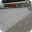
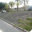

Picos
Favoritos
Ver todos-

Wallride da FGP
Júlia Fonseca
-

Borda de valores
Júlia Fonseca
-

Wallride do Rebouças
Júlia Fonseca
-

Segundo setor da praça Mauá
Júlia Fonseca
-
Gap do Itaú da Voluntários da Pátria
Bruno Lopes
Mais visitados
Bruno Lopes
Gap do Itaú da Voluntários da Pátria
53 visualizações
Luiza Sampaio
Gap com mureta da Voluntários
53 visualizações
André Soares
Rampa de entrada do túnel Rebouças
53 visualizações
Júlia Fonseca
Wallride de pedra portuguesa da FGP
53 visualizações